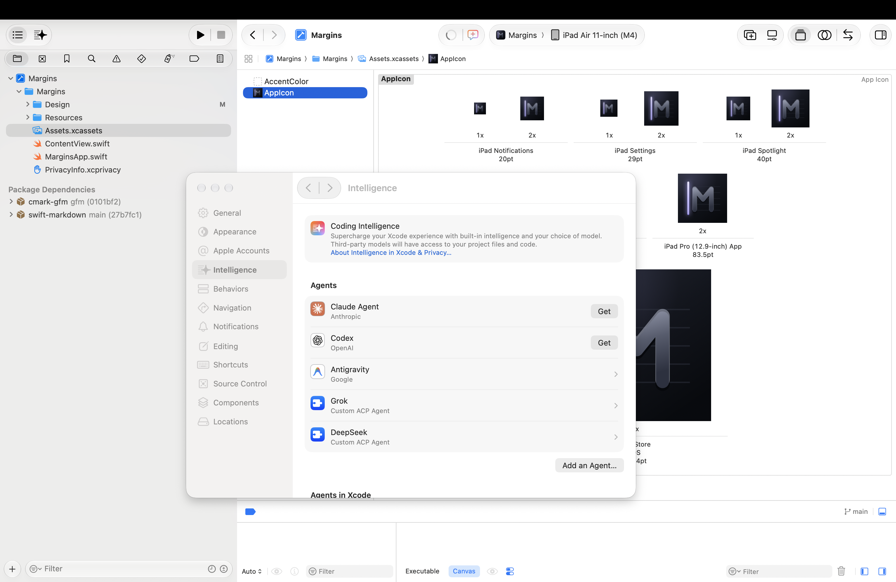

Xcode
Xcode is Apple’s app for making apps for iPhone, iPad and Mac. In this workshop, use the agent configured for the demonstration. This guide introduces the settings and a first test; the Hong Kong agent setup walkthrough will be added next.
Best for
Exploring how an agent can work with an app project.
Start here
Xcode on a Mac, with the workshop agent configured. Ask the presenter if that setup is not ready on your device.
The provider-specific sign-in exercises have been removed. Detailed setup instructions for the workshop’s regional agents are the next tutorial update.
Exercise 1: Open the Intelligence settings

- Open Xcode from your Applications folder.
- Choose Xcode, then Settings… (or press ⌘ and the comma key).
- Choose Intelligence in the sidebar.
The Coding Intelligence banner explains that third-party models can access project files and code. The presenter’s setup includes Grok and DeepSeek custom agents. Use the workshop’s configured agent for this demonstration.
Exercise 2: Check that it works
Screenshot to come
The coding assistant open beside a project, with New Conversation and the choice of agent marked 10, and a short reply to the test prompt.
- Open any project. To make a practice one, choose File, then New, then Project…, and choose App.
- Open the coding assistant, choose New Conversation, and select the agent configured for this workshop.
- Send the message below.
Hello! Which AI model am I talking to, and what could you help me do in this project?
Not yet tested. TBC
Once you connect an AI, it may read your project files and other information when it answers. To see what is shared, click About Intelligence in Xcode & Privacy… in the Intelligence settings. Keep students’ names and personal information out of your projects.
Push it further
Now ask your AI to build something. Change one thing at a time, and run the app after each change.
Build a SwiftUI screen for a Grade 7 student who loses their place in a multi-step maths problem. Show the current step first, then let them tick it off. Keep the language at Grade 5.
Not yet tested. TBC
Explain what each part of the code does, in plain English.
- Run it. Choose an iPad from the run destination menu in the toolbar, then click Run (⌘R). Your app opens in an iPad simulator, in the Device Hub app.
- Your own iPad. Sign in under Xcode, Settings…, Apple Accounts, connect the iPad and tap Trust, and turn on Developer Mode on the iPad. With a free Apple Account the app stops working after 7 days, and you run it again from Xcode.
- Students. TestFlight can’t reach students’ school Apple Accounts. To put an app on HKIS iPads, make it a private app through Apple School Manager, or use the App Store.